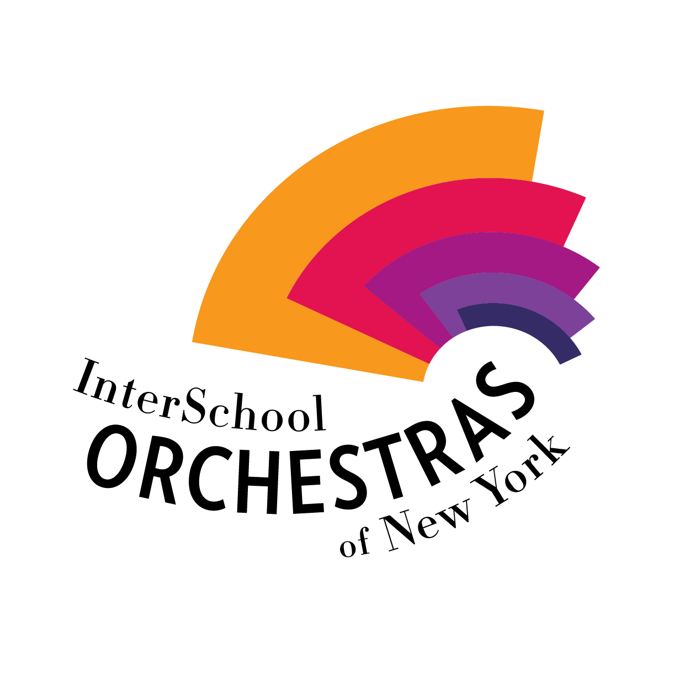

REBECCA KANTER
Hello, I'm Rebecca Kanter.
I am a musician, scientist, engineer, campaign staffer, and junior at LaGuardia High School of the Arts.
Welcome to my website!
Music:
- I have been playing flute since first grade. Since then, I have picked up the oboe, violin, piccolo, and english horn.
- I play in the Interschool Orchestra (ISO) Symphony and the New York Youth Symphonic Band (formerly known as the ISO Wind Symphony).
I also play in the Junior Band at LaGuardia High School.
- I have performed at Symphony Space, Jazz at Lincoln Center, the Hunter Kaye Playhouse,
the Met Museum, the Brooklyn Museum, and Carnegie Hall.

Political Campaigning:
- I was a political campaign intern on the Clyde Williams for Congress Campaign.
In this position I was responsible for managing all campaign volunteers.
- I was an intern on the Bessie Schachter for City Council Campaign.
In this position I was responsible for social media communications, outreach to prospective
voters, and the search for new employees for the campaign.